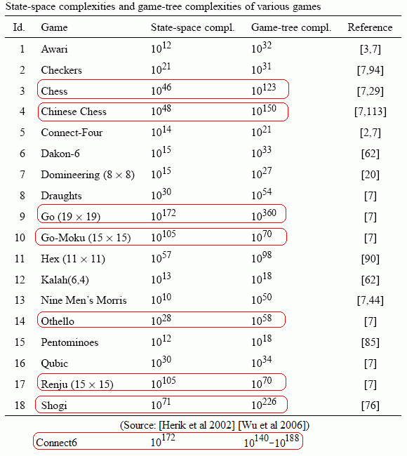

各种棋类游戏的复杂度对比
首页
五子棋交流
#1 各种棋类游戏的复杂度对比 作者：无尽 发表时间：2008-12-24 18:54:39

无意中发现的，转贴过来供参考。
状态空间复杂度？树状分支复杂度？后者容易明白
Shogi是将棋
［ 失落刀 于 2008-12-24 18:58:12 时奖励此帖[金币加 20 威望加1］
#2 Re:各种棋类游戏的复杂度对比 作者：逆刃 发表时间：2008-12-24 19:07:24
将棋，第一次听说，呵呵，希望中国象棋走上国际棋坛！
#3 Re:各种棋类游戏的复杂度对比 作者：人生一局棋 发表时间：2008-12-27 23:33:03
弱弱的问一下，楼主能翻译一下不？
看不懂啊。
#4 Re:各种棋类游戏的复杂度对比 作者：江南新绿 发表时间：2008-12-28 13:55:45
只对机器编程也许有意义，对人的话，只怕。。。比如五子棋，也许没有等棋盘摆满，我已经可以把对方干掉了。
#5 Re:各种棋类游戏的复杂度对比 作者：17号蓝星仔 发表时间：2008-12-28 14:24:28
这个是怎么计算出来的啊？ 评分的规则是什么？ 不好说吧